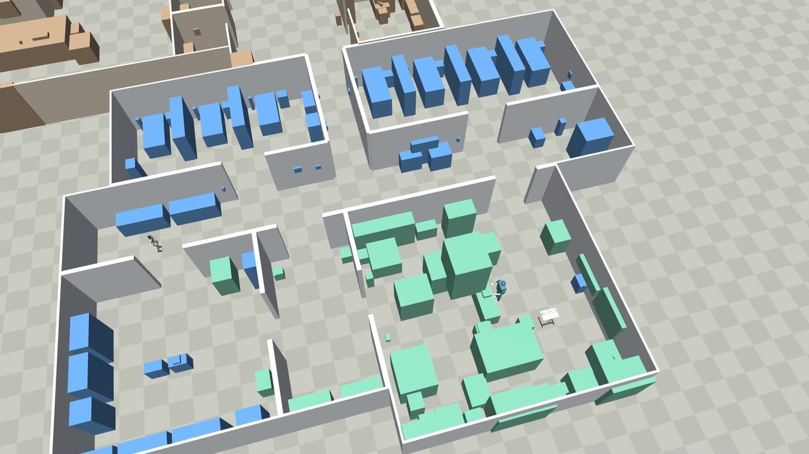
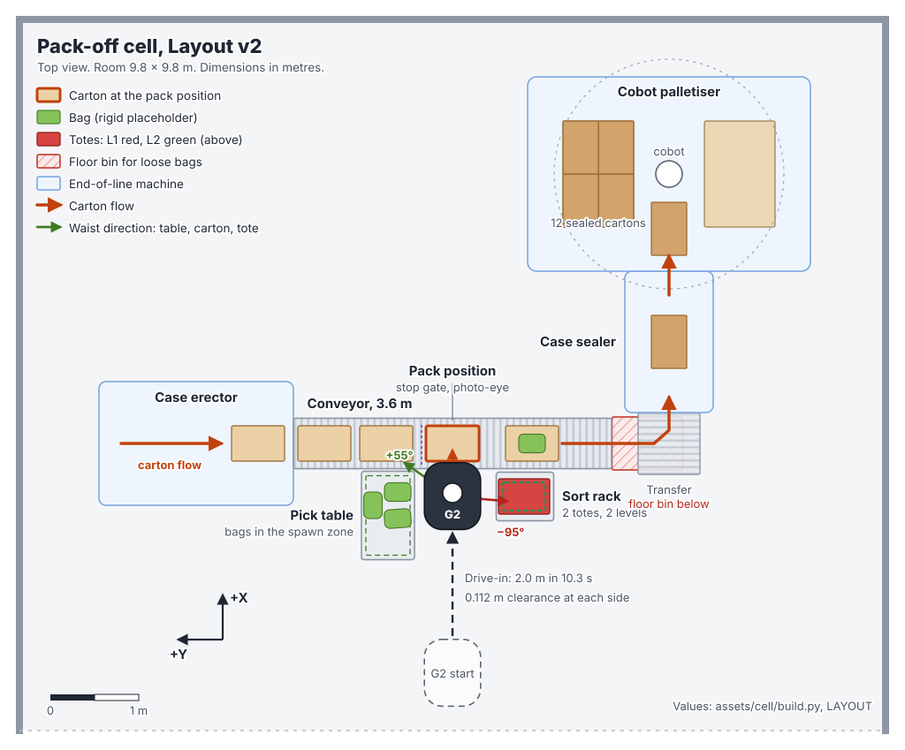

01
Choose the right robot
Compare wheeled, bipedal and legged platforms on your tasks instead of their spec sheets.

Humanoid programmes
Before you buy a robot, find out what it can do in your building. We build a simulated version of your site, put candidate robots in it and run your tasks. You get evidence and an architecture before you sign a purchase order.
An arm that cannot reach the far side of the table, or a fire door the robot cannot push. Simulation finds these while they are still cheap to fix.
01
Compare wheeled, bipedal and legged platforms on your tasks instead of their spec sheets.
02
Find reach limits, clearances and cycle times before anyone moves a conveyor or orders a fixture.
03
Doors, lifts, shiny floors and people in corridors go into the model, and we test the robot against them.
04
Task software, demonstration data and policies from the study carry into the pilot, so the robot does not start from zero.

What we build
We build the model from your drawings, photos and a day on site. One layout file generates the photoreal scene in NVIDIA Isaac Sim, the fast-physics world in MuJoCo and the maps, so all of them agree. A build check stops the model if furniture blocks a door or two objects overlap.
Then we add your products, your fixtures and the candidate robots, each running the same software it would run on site.
What we test
We run reach studies, cycle-time runs and navigation through your doors and lifts. We inject failures, such as a dropped item, a blocked corridor or a lost signal, and check that the robot recovers or stops safely.
Every run is recorded, so each number in the report links back to the run that produced it.
How a study runs
The scope and timing depend on the site and the tasks. We agree both after the discovery phase, before the modelling starts.
We visit, walk the process with your team and agree the tasks, the success measures and the constraints on safety, space and shifts.
We model the building, the fixtures, your products and the candidate robots.
Reach studies, cycle-time runs, navigation, failure cases and recovery, all recorded.
Robot choice, cell layout, safety zones, links to your line control and warehouse systems, and the people around the robot.
A plan for the first robot on your floor, with acceptance tests taken from the simulation.
What you get
A study ends with a clear recommendation: which robot, in which layout, doing which tasks, with the numbers behind it. Sometimes the recommendation is a different kind of automation, and we say so.
What simulation can and cannot tell you
Simulation answers reach, layout, cycle-time and navigation questions well. It is weaker on contact-rich handling of soft goods, such as bags of salad, and on how people behave around a robot in a busy space.
We flag those risks in the report and plan hardware tests for them early, so they do not surprise you in the pilot.
Questions
No. Choosing the robot is part of the study. We work with off-the-shelf humanoids and quadrupeds from several manufacturers and compare them on your tasks.
Floor plans or drawings, photos of the area, samples or specifications of the products the robot will handle, a description of the process and a day on site with the people who run it.
Yes. The site model, the task software and the training data carry into the pilot. That is why we build them on the robot's real interface from the start.
Then the report says so, and says what would work better. A clear no early on is a good outcome for a study.
We treat them as confidential and agree terms with you before the study starts.
A short call about your site, your tasks and what you want a robot to change. We will tell you whether a simulation study makes sense.